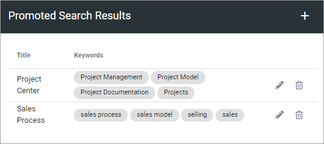

Promoted Search Results¶
Based on search feedback, an administrator can create promoted search results in Omnia Admin.
Whenever a user search on any of the keywords of a Promoted Search Result, it will be available here:

A list of promoted search can be:
To edit, click the pen. To delete, click the dust bin.
When you edit a promoted search result, the same settings are available as when creating a new one, see below.
Create a new promoted search result¶
Do the following:
Click the plus.
Use the following settings:
Url: Type or paste a Url that a click on the heading should go to.
Title: Type the clickable heading that will be shown in Advanced Search, in any or all tenant languages (click the flag to change language). An example is shown in the top image.
Description: This text will be shown under the heading, in any or all tenant languages (click the flag to change language). An example is shown in the top image.
ADD IMAGE: If you want, you can add an image to be shown by the promoted search result (see example in the top image).
Keywords Add the keywords that will result in the promoted search result being shown.
On Hold: On hold means it’s not active yet. To enable this search result, select “Active”.
Active: When a Promoted Search Result is active, you can set start and end dates if you wish. It’s not mandatory.
Targeting: A promoted search result can be targeted, meaning just shown to some users. See this page for more information: Using Targeting
Click CREATE when you’re done.